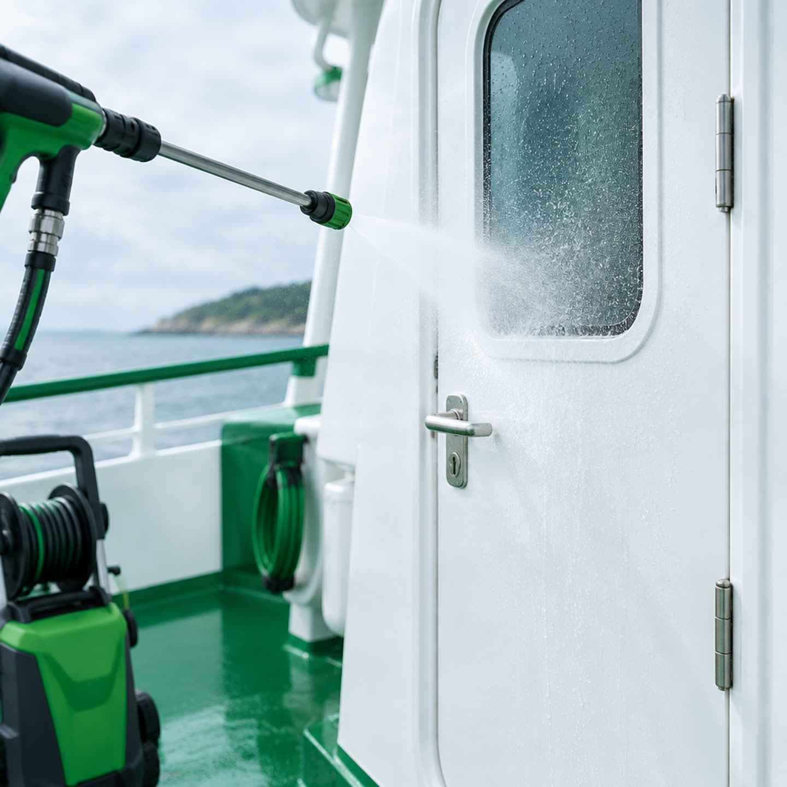

Услуги
Что делаем за один выезд
Кабина считается обслуженной, когда у неё нет запаха, налёта и мусора, а расходники пополнены. Поэтому работа идёт по зонам, а не «по верхам».
Состав работ
Из чего складывается обслуживание
Разовый выезд или постоянный график: набор работ один и тот же, отличается только частота.
Очистка кабинок
Мойка пола, стен, двери, сиденья и бачка с профессиональными составами.
Дезинфекция
Обработка контактных поверхностей и внутреннего объёма с выдержкой средства.
Устранение запаха
Нейтрализатор вместо ароматизатора: воздействует на причину, а не на восприятие.
Расходники
Пополнение бумаги и средств, проверка смыва, замка и трапа.
Зона вокруг кабины
Уборка площадки рядом: это часть впечатления, особенно на виду у города.
Отметка о выезде
Запись в журнале объекта: кто приехал, что сделал, когда следующий раз.
Режим обслуживания
Выберите объект — покажем подход
Разная нагрузка требует разной частоты. Отметьте тип объекта, чтобы увидеть, как строится работа.
Сравнение
Разовый выезд или график
Оба варианта рабочие: выбор зависит от того, сколько людей пользуются кабиной и как долго она стоит на объекте.
| Что сравниваем | Разовый выезд | Обслуживание по графику |
|---|---|---|
| Когда подходит | Мероприятие, окончание работ, сезонный объект | Стройплощадка, парк, рынок, производство |
| Частота | Один раз под дату | Согласованный график |
| Что входит | Полный регламент по зонам | Полный регламент плюс отметка в журнале |
| Контроль | Осмотр при сдаче | Осмотр плюс запись о каждом выезде |
| Стоимость | Зависит от количества кабин, их состояния и частоты выездов — обсуждаем на месте или по описанию объекта | |

Нужен порядок на объекте?
Опишите, сколько кабин и как часто они используются — предложим режим обслуживания.